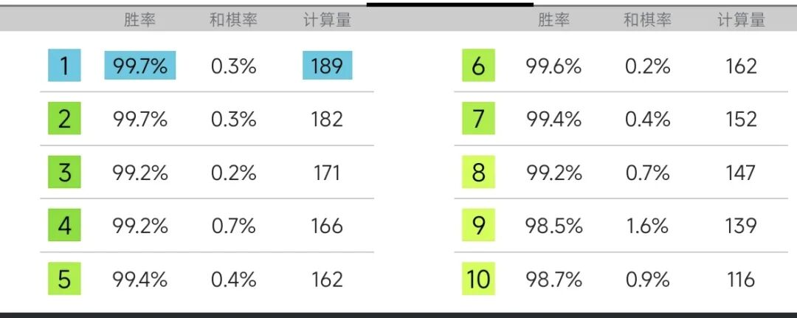
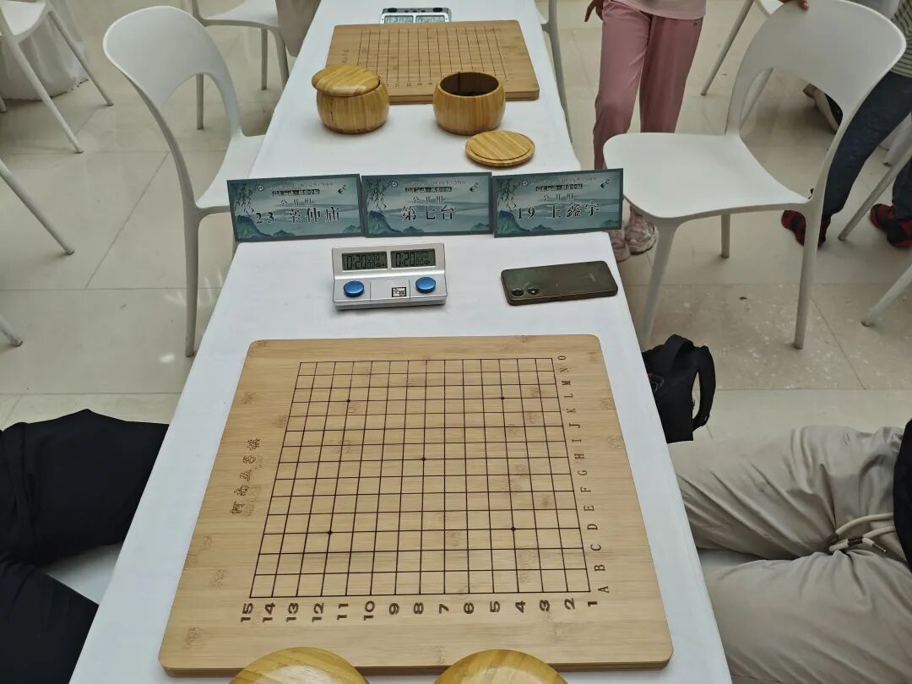

赛后记｜悟道，从输一盘棋开始
唉，输棋！真没想到一路平推过去的完美棋路，满盘可胜的绝妙局面，居然没能取胜。一年了，该好好输一盘了。你的水平能强大到在20分钟内每次都零失误地一直赢下去吗？不可能的。

河南省五子棋等级赛又开始了。2024年在这片土地参加的比赛顺风顺水，全胜只道是寻常，冠军如同囊中之物。一看规程，心中窃喜，或许我的“一级”又能再进一步了。欣然报名，前往去年省塔十公开赛的全胜宝地万达坊。接下来就是收获教训的时刻。
......第五轮开始了。回想第一轮面对业余选手，嘿，对方连五手两打都不会，我却看也不看走急一步，送给对手简单T，心想再也不能疏忽大意。让一追三，来到第五轮，又回到了正常该在的前三台。我的对手依然是那位常见的三段少年。2024年的两次等级赛中我都是一路平推地赢过去，目睹对方的苦瓜脸，自己露出善良的笑容。这次依然是这样，对方的苦瓜脸更加持久。
20分钟包干的两打赛第五轮开始了。我第九手一个小变招，对方脸色马上阴沉下来。交换过后对方落下第十四手，我就知道对手又犯错了。这次效果更好，才十几手对手的棋就已经死透了。我又把局面推到了双方均脱谱的情况，那么接下来就是我的表演时间。个人秀开始了。危险的钟声也敲响了。
第十五手一搞，对方更加慌乱，长考过后我一通操作，局面上我大赢特赢，随便扔一颗都能胜利。对方只剩五六分钟，我时间还占优势。那就随便想吧。我是做个眠三继续下优势棋，还是做二挡二稳健一手，还是直接强行算VCT把对手杀穿，还是随便飞一颗玩玩然后继续看对手的表情？思考的过程好像这盘棋我就赢定了一样。事实是这样，怎么搞都赢了，可惜事与愿违，胡乱想的过程中忘记了时间，回过头一看，啊，哎，嗨......
随便瞎做一通，漏了对手一个抓三三，对手双手合十祈求成功。最终我把禁手下上，成功让对手指认出了正确的禁手。对手指认过后，计时器都在滴滴作响。输两轮，那么无论3分、4分还是5分业已一样，退出了前四的争夺。游戏结束了！
最后两盘对弈时状态很郁闷，干脆不看棋盘放弃计算，只是随便瞎扔，看自己是不是不需要计算就不会有超时风险。成绩已然不重要。果然不重要。
该输。输一盘是好事。第七轮我的对局结束后一位德高望重的老前辈叫我到室外。他开导我输棋很正常，谁都有输得找不到北的时候，更何况我输这么一两盘还没到那种程度。简单几句话，我明白了问题所在。总结来说，这个比赛时长，而我的准备全是“对付高手的变化”，焉用牛刀，太容易翻车失误。诚然参加等级赛的青少年们在其组别都有很强的竞争力，但和我对弈仍然差距很大，我没必要用这么累的走法去下“展示棋”“表演棋”给自己再增加强度，正常下棋等待，可以轻松取胜。确实是这样，以往比赛一路赢到底，早早地让自己和对手双双脱谱，然后开始各种做棋表演，没有明显觉察到这种问题。现在有了这种机会可以更加明确自己的问题，是很难得的事情。现在对战青少年轻松愉快，和老前辈们下塔十也似乎惬意，可要知道，这是省赛，不是全国赛。倘若我们上了全国赛，新的选手面对我们，恐怕就和我现在的状态是一样的。居安思危，更何况我们现在的水平都没那么安。
晚上照例走在金水北与惠济交错的时刻，看着街边隐喻的天空，读懂了喻体之意。明白了，郁闷之情顷刻排解。正如第五轮那位三段的对手，合十获取哈利路亚式的欢呼，像个孩子一样成为暴烈炽热的花火。想来最近期末考试、社团换届、桥牌精进、结课作业等各种事务缠身，心思缠绕缭乱，现在正是悟道和成长的时刻。这是生命中的一天，宝贵而不羁。
棋及生活来说对谁都不简单。倡导“公式相声”的博士夫妇“到现场等着授予冠军”的前车之鉴仍历历在目。虽然我们并不认为一定夺冠，但事实上心理还是崎岖的。历来的战绩光鲜亮丽，在这片土地上甚至未尝真正输过一轮。殊不知真正的对手的对手只有自己。让我们跃升的是什么？高中社团被世界冠军刘大沙里淘金的欣喜？智运会前去临沭担任集训讲师的从容？亦或是山东与河南省赛的快乐与遗憾？我们的路子，无论对手是谁，只要我们下得弱一点都很可能猝死，这是我们的问题。野性而华丽。少徒增烦恼吧，比赛机会还很多，某一天，我们也有充足的条件，在全国赛场上留下我们的影子。到时候恐怕从头输到尾比赢一盘要容易的多了，哈哈。所以，请继续磨砺技术吧！

看到大学生棋友们披荆斩棘以及洛阳的长辈们老骥伏枥，由衷的感到高兴。五子棋这项体育项目遍地开花，越来越多的爱好者参与其中并提升水平，推广普及与竞技艺术携头并进，这便是努力的收获。我们下次再战！